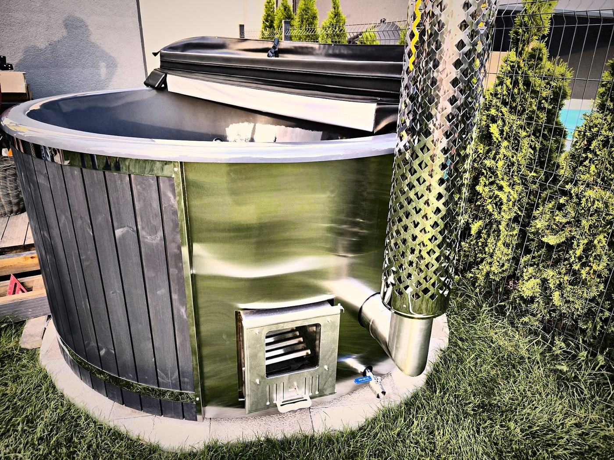

Updated: 10 November 2026

A hot tub with a liner and a wood stove is easy to look after, as long as you use the right things and keep to a few routines. Here is how to care for yours.
Cleaning the liner
Acrylic or gelcoat, it is the same: after bathing, rinse the liner with clean water and wipe it with a soft damp cloth. You don't need any cleaning products for this, and you shouldn't use any.
Never use:
- cleaning products of any kind, even mild ones,
- chlorine or other chemicals,
- solvents such as acetone or thinners, which permanently change the look of the liner,
- abrasive products or scouring pads.
Rinse off residues of sun cream, oils and soap regularly. Limescale marks show up more on dark colours, but they are easy to remove. Do not step into the tub with shoes on, do not sit on the rim and do not take glass containers into the water.
Water quality: clean water from the start
Good care starts when you fill the tub. Use clean water with a normal iron content that is not too hard, so that no limescale forms. Limescale and iron deposits, as well as sand, grit or mud in the water circuit, harm the liner and the equipment.
Use only clean water, without chemicals or salts. Chlorine, bubble bath and other chemicals affect the life of the stove, the tub and its equipment; in a tub with air massage, soap does not belong in the water either. If the iron content of your water is above the standard value (200 µg/l), you need an iron removal filter; with hard water, a softening or descaling filter.
Even with a filter, change the water every few weeks depending on use. Without filtration it needs changing more often.
The filtration system
A filter box or a sand filter keeps the water clear between water changes. Clean or backwash the filter regularly as described in the user manual. With hydro massage, also clean or replace the filter regularly so that the pump stays quiet and efficient, and never let the pump run dry: the water level must always be above the jets.
The wooden cladding
Wood is a natural material and changes colour over time, especially in direct sun. Here is how to keep it looking good:
- Thermowood: oil or treat the cladding with a wood protector once or twice a year. This preserves the colour and protects against moisture.
- WPC: needs no painting and little care; simply wash it with water and a soft brush.
- Wooden steps and drink shelf: brush off algae and leaves, wipe dry and oil them together with the cladding.
The best protection for the wood is the right spot: well ventilated, ideally under a roof and lifted off the ground, so that the base has no contact with soil, moisture or snow.
Stove and chimney
- Burn dry firewood; damp wood gives less heat and more soot. Do not burn coal.
- Always fill the tub with water before you light the stove, and drain the water only once the stove has cooled down completely.
- Remove the ash only when the stove is cold, and let the stove dry after use so that it does not rust.
- Clean the chimney and spark arrestor regularly; soot reduces the draught.
Thermo cover
Keep the cover closed whenever the tub is not in use. Sweep off snow, rain and leaves, wipe the underside dry from time to time, and do not sit or stand on it.
Equipment and frame
Check the stainless steel bands and screws once a season. Do not open or repair the lighting yourself; contact us instead. Electrical parts must be connected by a qualified electrician in line with local regulations.
Your care plan
After every bath
- Close the thermo cover
- Let the stove cool down; remove the ash only when it is cold
- Rinse the headrests with clean water and let them dry
Regularly
- Rinse the liner with clean water and wipe it with a soft damp cloth
- Clean or backwash the filter
- Change the water every few weeks depending on use
- Clean the chimney and spark arrestor
- Clear leaves and algae off the steps
Once a season or year
- Oil or treat the wooden cladding (once or twice a year)
- Check the bands and screws
- Before winter: if the tub will not be heated, drain the tub and the filtration system (see Using your wood-fired hot tub in winter)
Notes on materials and surfaces are also in our guide Thermowood, acrylic or gelcoat. Always follow the user manual that comes with your hot tub.
Frequently asked questions
What should I clean the liner with?
Only with clean water and a soft damp cloth. Do not use cleaning products, chlorine, solvents such as acetone or thinners, or anything abrasive.
How often should I change the water?
Even with filtration, every few weeks depending on use. Without a filter it needs changing more often.
Can I use chlorine or other water additives?
No. Use only clean water without chemicals or salts. Chlorine, bubble bath and other additives affect the life of the stove, the tub and its equipment.
How often does the wood need oiling?
Thermowood once or twice a year. WPC needs no oil; washing the cladding with water and a soft brush is enough.
What do I need to know about the stove?
Always fill with water first, then light the fire; burn only dry firewood; remove the ash only when the stove is cold, and let the stove dry after use.